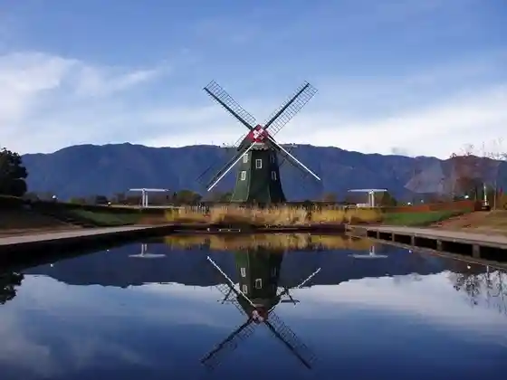
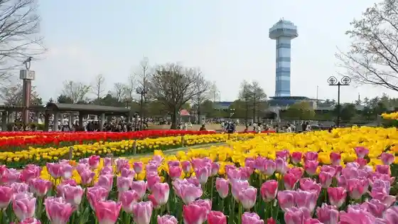
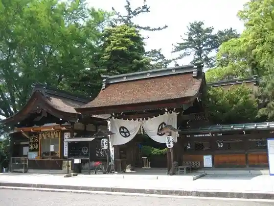
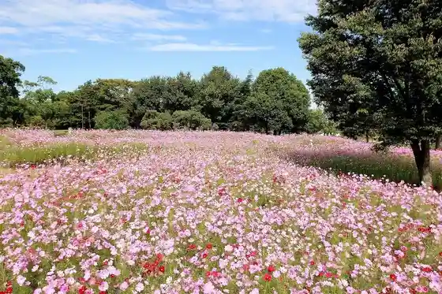

Chiyo Ho Inari Shrine
Kaizu, Gifu · 0584-53-1115 · Official / source link
Kokuei Kiso Mikawa Koen Akuawarudo Suigo Park Center
Kaizu, Gifu · 0584-53-7200 · Official / source link

Kiso Mikawa Koen Center (Mizu to Midori no Kan Viewpoint Tawa)
Kaizu, Gifu · 0584-54-5531 · Official / source link

Chisui Shrine Sembon Matsubara
Kaizu, Gifu · 0584-52-1133 · Official / source link

Kiso Mikawa Park (Aki no Hanamono Go)
Kaizu, Gifu · 0584-54-5531 · Official / source link

Kiso Mikawa Park (Fuyu no Hikari Monogatari)
Kaizu, Gifu · 0584-54-5531 · Official / source link
Imao no Sagicho
Kaizu, Gifu · 0584-53-1115 · Official / source link
Roadside Station Tsukimi no Sato Nanno
Kaizu, Gifu · 0584-58-0258 · Official / source link
Nanno Onsen Suisho Baths
Kaizu, Gifu · 0584-58-1126 · Official / source link
Hanedani Dandan Park
Kaizu, Gifu · 0584-53-1374 · Official / source link
Kiso Mikawa Koen Center
Kaizu, Gifu · 0584-54-5531 · Official / source link
Kiso Mikawa Park Natsu no Mizumono Go
Kaizu, Gifu · 0584-54-5531 · Official / source link
Tsuya Kawa no Higan Hana
Kaizu, Gifu · 0584-53-1115 · Official / source link
Kiso Mikawa Waju Museum
Kaizu, Gifu · 0584-53-3232 · Official / source link
Korizato Museum
Kaizu, Gifu · 052-661-0113 · Official / source link
Tsukimi Forest
Kaizu, Gifu · 0584-53-1351 · Official / source link
Garyu Yama Gyoki Tera
Kaizu, Gifu · 0584-55-0031 · Official / source link
Tsukimi Forest no Ajisai
Kaizu, Gifu · 0584-53-1351 · Official / source link
Hirata Park
Kaizu, Gifu · 0584-66-4815 · Official / source link
Roadside Station Kureru Hirata
Kaizu, Gifu · 0584-67-3988 · Official / source link
Kiso Mikawa Park (Haru no Hanamono Go)
Kaizu, Gifu · 0584-54-5531 · Official / source link
Yoshida Deki Yama Park Cherry Blossoms
Kaizu, Gifu · 0584-53-1374 · Official / source link
Nanno Umezono
Kaizu, Gifu · 0584-53-1115 · Official / source link
Dai Fu Kawa Tsutsumi no Sakura Namiki
Kaizu, Gifu · 0584-53-1374 · Official / source link
Buruberii Garden Gifu
Kaizu, Gifu · Official / source link
Nagaragawa Sabisu Center
Kaizu, Gifu · 0584-54-2075 · Official / source link
Bokuzen Tsuka (Ujiie Bokuzen no Haka)
Kaizu, Gifu · 0584-53-1536 · Official / source link
Tsukimi Forest Mizuki Kai
Kaizu, Gifu · 0584-53-1351 · Official / source link
Sabo Yugaku Kan
Kaizu, Gifu · 0584-55-1110 · Official / source link
Kiso Mikawa Koen Center Mizuya (Waju no Noka)
Kaizu, Gifu · 0584-54-5531 · Official / source link
Bokuzen Sawa
Kaizu, Gifu · Official / source link
Washino Farm
Kaizu, Gifu · 080-8256-9672 · Official / source link
Matsu no Ki Castle Ruins
Kaizu, Gifu · Official / source link
Imao Castle Ruins
Kaizu, Gifu · Official / source link
Takasu Castle Ruins
Kaizu, Gifu · Official / source link
Komano Castle Ruins
Kaizu, Gifu · Official / source link
Tsuya Castle Ruins
Kaizu, Gifu · Official / source link
Hanedani Dandan Koen Campground
Kaizu, Gifu · 0584-55-1110 · Official / source link